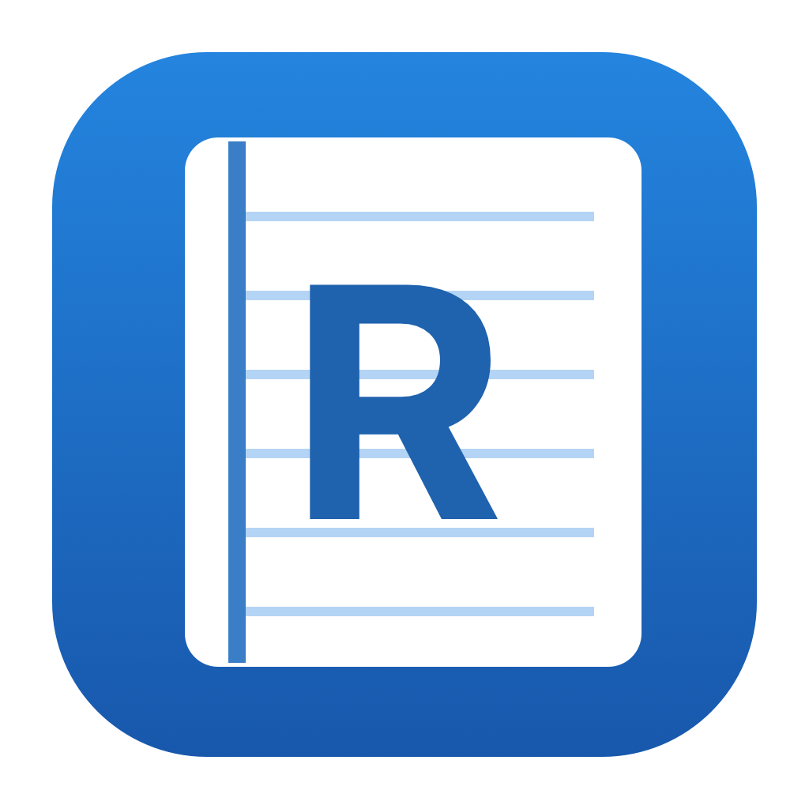

Rnotebook 使用手册
在 Mac 上编写 QMD、RMD 笔记，交互运行 R，并使用 Quarto 导出报告。
Rnotebook 将文字、代码、公式和图形放在一份 Markdown 文档中。每份笔记在独立窗口中编辑，并拥有独立的 R 会话。
开始使用
按照简易指引完成第一份笔记，或查看语法示例。
查阅帮助
从左侧目录选择主题。你可以了解编辑操作、运行 R、导出报告，以及保存与恢复。顶部搜索框可查找帮助内容。

在 Mac 上编写 QMD、RMD 笔记，交互运行 R，并使用 Quarto 导出报告。
Rnotebook 将文字、代码、公式和图形放在一份 Markdown 文档中。每份笔记在独立窗口中编辑，并拥有独立的 R 会话。
按照简易指引完成第一份笔记，或查看语法示例。
从左侧目录选择主题。你可以了解编辑操作、运行 R、导出报告，以及保存与恢复。顶部搜索框可查找帮助内容。